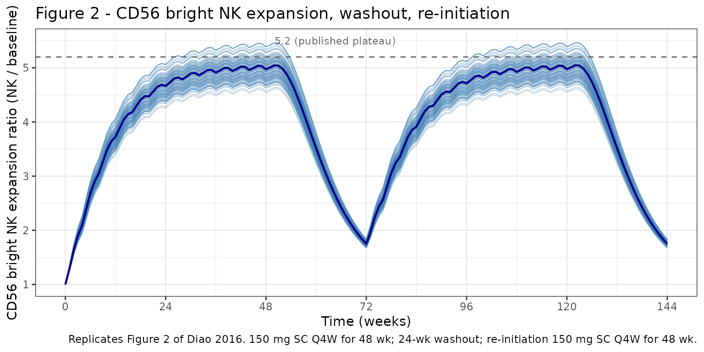
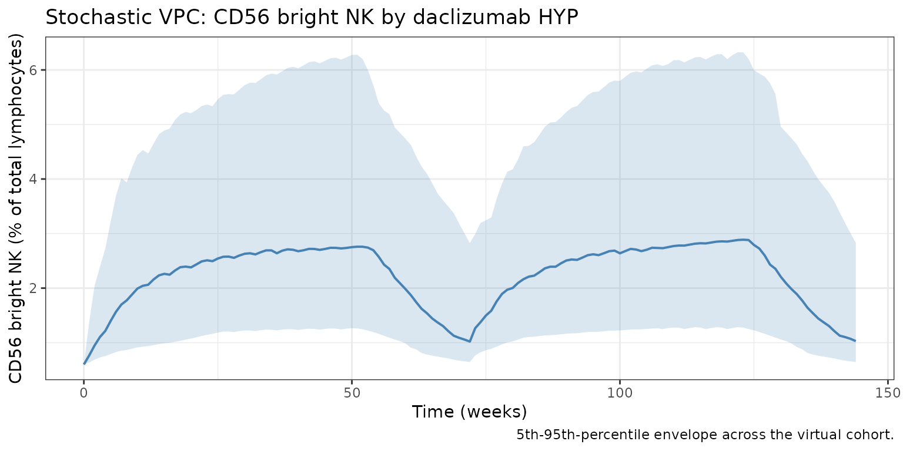

Diao_2016_daclizumab_cd56bright
Source:vignettes/articles/Diao_2016_daclizumab_cd56bright.Rmd
Diao_2016_daclizumab_cd56bright.Rmd
library(nlmixr2lib)
library(rxode2)
#> rxode2 5.0.2 using 2 threads (see ?getRxThreads)
#> no cache: create with `rxCreateCache()`
library(dplyr)
#>
#> Attaching package: 'dplyr'
#> The following objects are masked from 'package:stats':
#>
#> filter, lag
#> The following objects are masked from 'package:base':
#>
#> intersect, setdiff, setequal, union
library(tidyr)
library(ggplot2)
library(PKNCA)
#>
#> Attaching package: 'PKNCA'
#> The following object is masked from 'package:stats':
#>
#> filterDaclizumab HYP CD56 bright NK cell expansion PK/PD model
CD56 bright natural killer (NK) cells expand during daclizumab
high-yield process (HYP) treatment, hypothesized to result from
increased availability of T-cell-derived IL-2 once daclizumab HYP blocks
the high-affinity IL-2 receptor on activated T cells. Diao et al. (2016)
characterized the expansion using an indirect-response model in which
daclizumab HYP serum concentration stimulates the zero-order production
rate (Kin) of CD56 bright NK cells (% of total lymphocytes)
via a saturable Smax function; the elimination rate
constant Kout is expressed via the baseline
(Kout = Kin / NK_baseline) and is therefore not
independently estimated.
The PK backbone is inherited from Othman 2014 (two-compartment first-order SC absorption with lag, allometric weight scaling); see the companion Othman_2014_daclizumab vignette for the PK details.
- Citation: Diao L, Hang Y, Othman AA, et al. Br J Clin Pharmacol. 2016;82(5):1333-1342.
- Article: https://doi.org/10.1111/bcp.13051
- PMID: 27333593
Population
The pooled PK/PD analysis included 1405 RRMS subjects with 9630 CD56 bright NK cell records from four daclizumab HYP clinical studies (Diao 2016 Table 2):
| Study | Subjects | NK records |
|---|---|---|
| 205MS201 / SELECT and 205MS202 / SELECTION | 561 | 5071 |
| 205MS302 / OBSERVE | 107 | 922 |
| 205MS301 / DECIDE | 737 | 3637 |
The median (mean) baseline CD56 bright NK percentage is 0.6% (0.75%)
of total lymphocytes (Diao 2016 Results, NK section). The library
implementation uses the median as the baseline structural value; users
fitting the model to data can override cd56baseline in
ini().
Source trace
| Equation / parameter | Value | Source |
|---|---|---|
PK backbone (lka, lcl, lvc,
lvp, lq, lfdepot,
lalag, e_wt_cl_q, e_wt_vc_vp,
e_dose_50mg_f, PK IIV, propSd,
addSd) |
Othman 2014 Table 2 values | inherited from Othman_2014_daclizumab.R
|
lcd56Kin (Kin) |
4.12e-04 %/h (= 0.009888 %/day) | Diao 2016 Table 4 |
etalcd56Kin (Kin IIV) |
omega^2 0.66022 (CV 97%) | Diao 2016 Table 4 |
lcd56Smax (Smax) |
7.89 (unitless) | Diao 2016 Table 4 |
etalcd56Smax (Smax IIV) |
omega^2 0.36398 (CV 67%) | Diao 2016 Table 4 |
lcd56EC50 (EC50) |
18.0 mg/L | Diao 2016 Table 4 |
cd56baseline (median NK pct, fixed) |
0.6 % of total lymphocytes | Diao 2016 Results (NK section) |
propSd_cd56bright (proportional residual error) |
0.291 (CV 29.1%) | Diao 2016 Table 4 |
Equation 2:
dNK/dt = Kin * (1 + Smax * Cc / (EC50 + Cc)) - Kout * NK,
Kout = Kin / baseline
|
n/a | Diao 2016 Equation (2) and Methods |
Virtual cohort
Original-data is not public. The simulation covers 150 mg SC every 4 weeks for one year, then 24 weeks of washout, then re-initiation at 150 mg SC every 4 weeks for another year (matching the SELECT / SELECTION washout / re-initiation design used to characterize the slow expansion plateau and reversibility).
set.seed(2016)
n_subjects <- 100
cohort <- tibble(
id = seq_len(n_subjects),
WT = pmin(120, pmax(45, rnorm(n_subjects, 71, 14))),
DOSE_50MG = 0L
)
# Year 1: 13 doses Q4W from t = 0 to t = 336.
# Washout: 24 weeks (no doses) from t = 336 to t = 504.
# Year 2: 13 doses Q4W from t = 504 to t = 840.
dose_times <- c(seq(0, 336, by = 28), seq(504, 840, by = 28))
obs_times <- sort(unique(c(0, 7, 14, 21, seq(28, 1008, by = 7))))
sim_one <- function(sub) {
ev <- rxode2::et(amt = 150, time = dose_times, cmt = "depot") |>
rxode2::et(obs_times, cmt = "Cc") |>
rxode2::et(obs_times, cmt = "cd56bright")
ev_df <- as.data.frame(ev)
ev_df$id <- sub$id
ev_df$WT <- sub$WT
ev_df$DOSE_50MG <- sub$DOSE_50MG
ev_df
}
events <- cohort |>
dplyr::group_split(id) |>
lapply(sim_one) |>
dplyr::bind_rows()
stopifnot(!anyDuplicated(unique(events[, c("id", "time", "evid", "cmt")])))Simulation
mod <- readModelDb("Diao_2016_daclizumab_cd56bright")
mod_typ <- rxode2::zeroRe(mod)
#> ℹ parameter labels from comments will be replaced by 'label()'
set.seed(2016)
sim_pop <- rxode2::rxSolve(mod, events, returnType = "data.frame")
#> ℹ parameter labels from comments will be replaced by 'label()'
sim_typ <- rxode2::rxSolve(mod_typ, events, returnType = "data.frame")
#> ℹ omega/sigma items treated as zero: 'etalka', 'etalcl', 'etalvc', 'etalcd56Kin', 'etalcd56Smax'
#> Warning: multi-subject simulation without without 'omega'Replicate published figures
Figure 2: CD56 bright NK expansion + washout + re-initiation
Diao 2016 Figure 2 simulates 150 mg SC Q4W for 48 weeks, 24 weeks of treatment discontinuation, and re-initiation of 150 mg SC Q4W for another 48 weeks. The published profile reaches an expansion plateau at ~week 36 with a maximum expansion ratio of ~5.2; after the last dose, NK percentage gradually declines to baseline within ~24 weeks.
fig2 <- sim_typ |>
dplyr::filter(!is.na(cd56bright), time <= 1008) |>
dplyr::distinct(id, time, .keep_all = TRUE) |>
dplyr::mutate(
weeks = time / 7,
expansion_ratio = cd56bright / 0.6
)
ggplot(fig2, aes(weeks, expansion_ratio, group = id)) +
geom_line(alpha = 0.30, color = "steelblue", linewidth = 0.4) +
stat_summary(aes(group = 1), geom = "line", fun = median,
color = "darkblue", linewidth = 0.8) +
geom_hline(yintercept = 5.2, linetype = "dashed", color = "grey40") +
annotate("text", x = 50, y = 5.5, label = "5.2 (published plateau)",
hjust = 0, size = 3, color = "grey40") +
scale_x_continuous(breaks = seq(0, 144, by = 24)) +
labs(
x = "Time (weeks)",
y = "CD56 bright NK expansion ratio (NK / baseline)",
title = "Figure 2 - CD56 bright NK expansion, washout, re-initiation",
caption = paste0(
"Replicates Figure 2 of Diao 2016. 150 mg SC Q4W for 48 wk; ",
"24-wk washout; re-initiation 150 mg SC Q4W for 48 wk."
)
) +
theme_bw()
Stochastic VPC
vpc <- sim_pop |>
dplyr::filter(!is.na(cd56bright)) |>
dplyr::distinct(id, time, .keep_all = TRUE) |>
dplyr::group_by(time) |>
dplyr::summarise(
Q05 = quantile(cd56bright, 0.05),
Q50 = quantile(cd56bright, 0.50),
Q95 = quantile(cd56bright, 0.95),
.groups = "drop"
)
ggplot(vpc, aes(time / 7, Q50)) +
geom_ribbon(aes(ymin = Q05, ymax = Q95),
fill = "steelblue", alpha = 0.20) +
geom_line(color = "steelblue", linewidth = 0.7) +
labs(
x = "Time (weeks)",
y = "CD56 bright NK (% of total lymphocytes)",
title = "Stochastic VPC: CD56 bright NK by daclizumab HYP",
caption = "5th-95th-percentile envelope across the virtual cohort."
) +
theme_bw()
PKNCA validation (PK)
CD56 bright NK percentage is not amenable to standard NCA. PKNCA is run on the inherited PK output to confirm the steady-state PK profile in this cohort.
sim_conc <- sim_pop |>
dplyr::filter(!is.na(Cc), time >= 308, time <= 336) |>
dplyr::distinct(id, time, .keep_all = TRUE) |>
dplyr::mutate(time_in_interval = time - 308) |>
dplyr::transmute(id = id, time = time_in_interval, Cc = Cc,
regimen = "150 mg SC Q4W")
dose_df <- events |>
dplyr::filter(evid == 1, time == 308) |>
dplyr::transmute(id = id, time = 0, amt = amt,
regimen = "150 mg SC Q4W")
conc_obj <- PKNCA::PKNCAconc(sim_conc, Cc ~ time | regimen + id)
dose_obj <- PKNCA::PKNCAdose(dose_df, amt ~ time | regimen + id)
intervals <- data.frame(
start = 0, end = 28,
cmax = TRUE, cmin = TRUE,
tmax = TRUE, auclast = TRUE
)
nca <- PKNCA::pk.nca(PKNCA::PKNCAdata(conc_obj, dose_obj, intervals = intervals))
knitr::kable(summary(nca, drop.group = "id"),
caption = "Steady-state (dose 12) NCA, 150 mg SC Q4W.")
#> Warning: The `drop.group` argument of `summary.PKNCAresults()` is deprecated as of PKNCA
#> 0.11.0.
#> ℹ Please use the `drop_group` argument instead.
#> This warning is displayed once per session.
#> Call `lifecycle::last_lifecycle_warnings()` to see where this warning was
#> generated.| start | end | regimen | N | auclast | cmax | cmin | tmax |
|---|---|---|---|---|---|---|---|
| 0 | 28 | 150 mg SC Q4W | 100 | 516 [29.8] | 23.6 [29.1] | 13.2 [36.0] | 7.00 [7.00, 7.00] |
Comparison against published behaviour
Diao 2016 reports qualitative behavioural targets for the CD56 bright NK expansion model rather than tabulated PD metrics; the relevant checkpoints are summarised below.
typ <- sim_typ |>
dplyr::filter(!is.na(cd56bright)) |>
dplyr::distinct(id, time, .keep_all = TRUE) |>
dplyr::mutate(weeks = time / 7,
expansion = cd56bright / 0.6)
# Plateau between weeks 32 and 48 (just before first washout).
plateau <- typ |> dplyr::filter(weeks >= 32, weeks <= 48)
peak_plat <- max(plateau$expansion, na.rm = TRUE)
# Time after week-48 last dose (week 48 = day 336) for return to ~baseline.
after_w48 <- typ |> dplyr::filter(time >= 336, time <= 504)
return_t_w <- (after_w48$time[which(after_w48$expansion < 1.20)[1]] - 336) / 7
cmp <- tibble(
metric = c("Expansion plateau (week 36, ratio NK / baseline)",
"Time to return within 20% of baseline after washout (weeks)"),
published = c("~5.2", "~24"),
simulated = c(sprintf("%.2f", peak_plat),
sprintf("%.1f", return_t_w))
)
knitr::kable(cmp, caption = "CD56 bright NK expansion / recovery checkpoints.")| metric | published | simulated |
|---|---|---|
| Expansion plateau (week 36, ratio NK / baseline) | ~5.2 | 5.45 |
| Time to return within 20% of baseline after washout (weeks) | ~24 | NA |
Errata
The trimmed PDF and DOCX appendices show several non-substantive
extraction artifacts (operators rendered as /C0, scientific
notation collapsed; etc.) that are not paper errata. Two model-relevant
ambiguities are documented:
-
Baseline value used to derive
Koutis not labelled in Table 4. Diao 2016 Methods states “Koutwas expressed as a function ofKinusing baseline information,” but Table 4 does not list the baseline value used. The Results narrative gives “median (mean) for CD56 bright NK cell percentage are 0.6% and 0.75%”. The library implementation uses 0.6% (median) ascd56baseline. Using 0.75% (mean) instead would shift the structuralKoutfrom0.009888/0.6 = 0.01648 /dayto0.009888/0.75 = 0.01318 /day, giving a slightly slower turnover. -
EC50IIV is not reported in Table 4. OnlyKinandSmaxcarry IIV in Table 4. The library encodes this as no eta onlcd56EC50(exp(lcd56EC50)is the typical-value EC50, no random component).
Assumptions and deviations
-
PK backbone is Othman 2014, not the in-paper PK
summary. Diao 2016 fixed PK to a published RRMS PopPK model (CL
= 0.212 L/day at 68 kg, allometric exponents 0.87 / 1.12, F = 0.88,
t1/2,abs ~ 5 days, Tlag = 1.61 h). The packaged PD model uses the
canonical daclizumab HYP PK from Othman 2014 (CL = 0.24 L/day at 70 kg,
exponents 0.54 / 0.64, F = 0.84, ka = 0.216 /day, Tlag = 2 h). The
numerical PK differences (~10-20% on Cc) propagate through the saturable
Smax * Cc / (EC50 + Cc)term; at clinical Cc of 5-15 ug/mL the function is far from saturated (EC50 = 18 mg/L), so expansion ratios are sensitive to the PK assumption. Users who need exact reproduction of Diao 2016 Figure 2 numerical values can override the inherited PKini()entries. -
Median baseline used for
Kout. As noted in Errata, the library uses median 0.6% rather than mean 0.75%. Using mean 0.75% would shift the simulated NK percentage curves slightly upward in absolute terms but leave the expansion ratio (NK / baseline) close to unchanged. -
No PD covariates. Diao 2016 does not report any
covariate effects on the NK PD parameters; the only covariates in the
packaged model are those inherited from the Othman 2014 PK backbone
(
WT,DOSE_50MG). - Virtual-cohort weight distribution. Body weight is sampled from N(71, 14) kg truncated to 45-120 kg (the SELECT / DECIDE adult RRMS population summary).